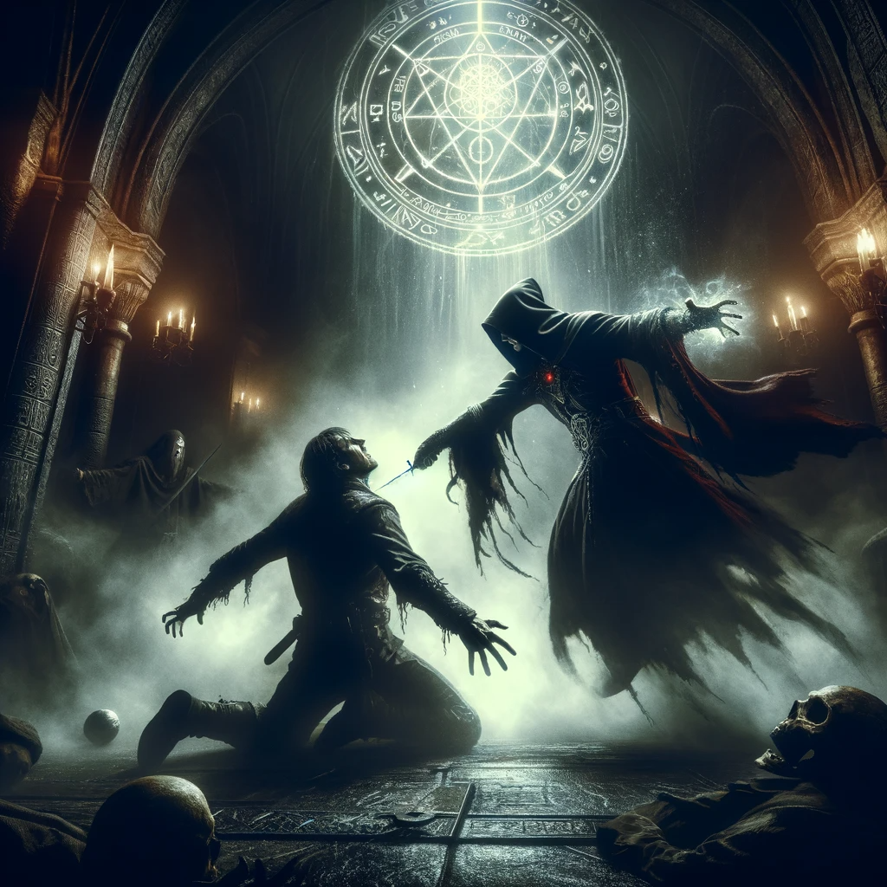

The Silent Takedown of the Warlock: A Shadow's Edge
In the heart of a cursed sanctum, where the air is thick with dark magic, you find the Warlock. Engrossed in a sinister incantation, his voice echoes through the chamber, a symphony of malevolence.
Suddenly, the Warlock senses your presence and unleashes a barrage of shadow bolts. But you, ever the master of evasion, had anticipated this. With a series of acrobatic rolls and fluid dodges, you dance through the onslaught.
In that fleeting instant, you emerge from the veil of darkness, a silent harbinger of fate. Your dagger, an extension of your lethal intent, strikes with chilling precision.
As the last echoes of his chants fade, the chamber falls into eerie silence. You stand alone, the victor in a shadow-play of stealth and cunning. Your triumph over the Warlock will be a tale whispered in the dark corners of the world.